<div class="textcontainer">
<p class="margin"> </p>
<h3>Week 2: 2D Design & Cutting</h3>
<!-- <p class="margin"> </p>
<div class="flexrow">
<a id="btn" href="./temp.zip" download>Test Download Button
</a>
</div>
<p class="margin"> </p> -->
<h4>Assignment 1: Make a Box</h4>
I made a box! To add some zest I cut out handles and decorative touches on the edges. I also was able to laser cut in one try!
<p> <p>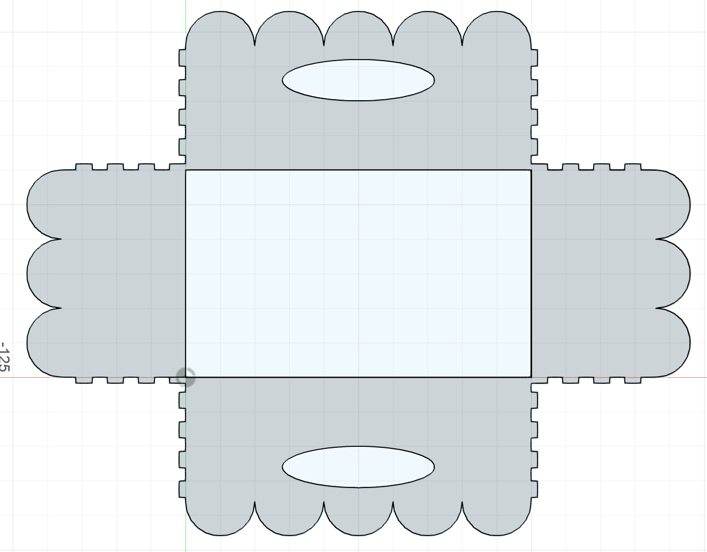</p>
</p>
The parameters:
<p> <p>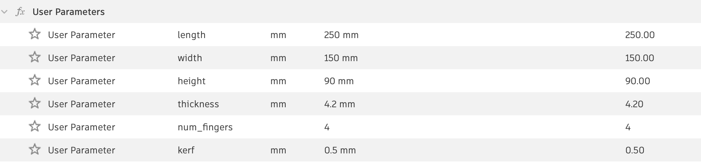</p>
</p>
The final result:
<p> <p>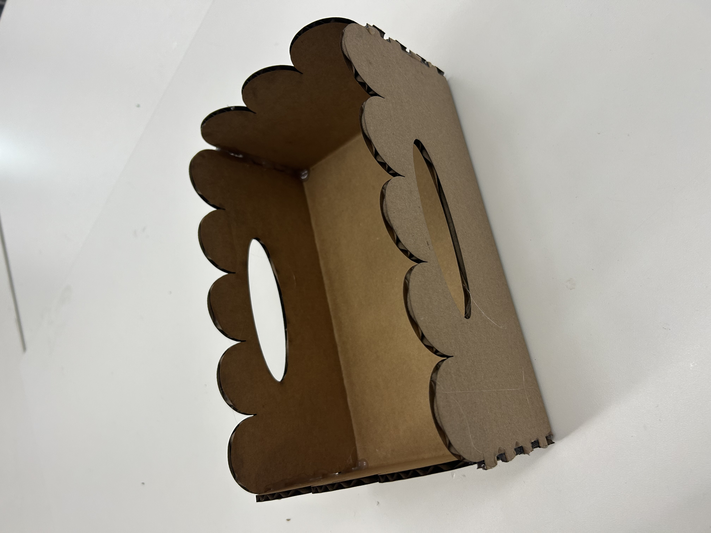</p>
<p>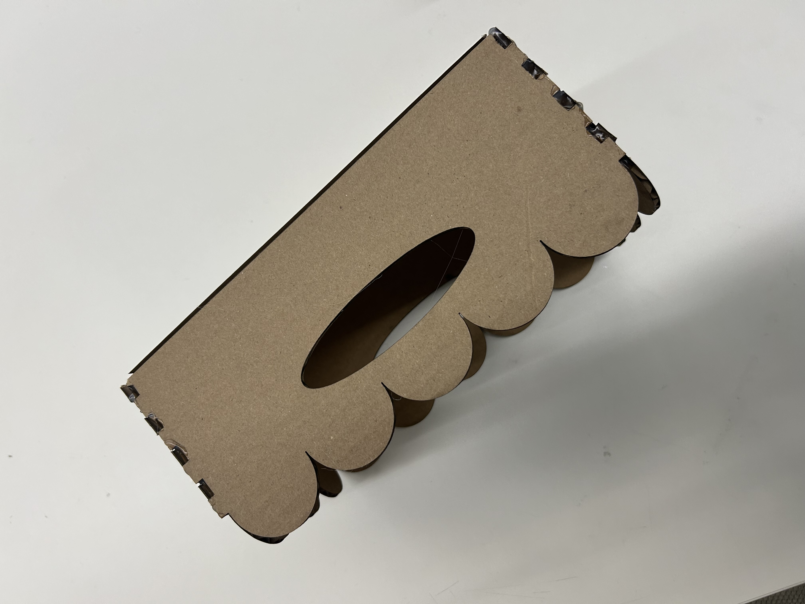</p>
</p>
<p> In the process I learned a lot about constraints and understanding when things turn blue and how to mess around until you find the loose component. See below for my sketch.
I removed all the extra lines on this sketch (such as the lines outlining the entire box without breaks for the fingers) because I didn't know how else to avoid that being included in the laser cutter. That's something I want to spend more time exploring next time I work with the laser cutter.
</p>
<h4>Assignment 2: Fusion 360 Tutorial</h4>
These were the following tutorials I watched to help with the my modeling! While I followed most of these for componenets of my water bottle, the second video of the glass bottle is the tutorial I most directly followed through to "recreate" a full bottle.
<br> Basics (LEGO): https://www.youtube.com/watch?v=d3qGQ2utl2A&t=38s <br>
<br>Making a bottle (revolve): https://www.youtube.com/watch?v=DfAfxae8aRc<br>
This bottle tutorial is the tutorial that I followed almost exaclty except I used a photo of my own waterbottle instead since that was the object I was going to make. Other than that and a different material than glass, it's the same! Below is a photo of the part that directly follows the tutorial before I also follow the revolve. The full 3D file is below with the complete waterbottle.
<p> <p>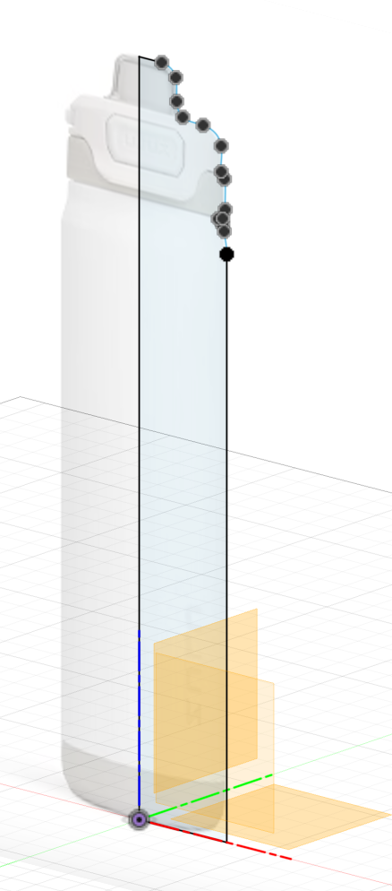</p>
</p>
<br>Align tool: https://youtu.be/bYKLvLKhW2A <br>
<br>Projecting onto curved surfaces: https://youtu.be/TOedgF0n4yQ<br>
<br>Sweep tool: https://youtu.be/QimeZSqS_sc <br>
<br>Appearances: https://www.youtube.com/watch?v=B0uOtduBZgI <br>
<br><br>
<h4>Assignment 3: Fusion Modeling</h4>
I recreated my water bottle!
<p> <p>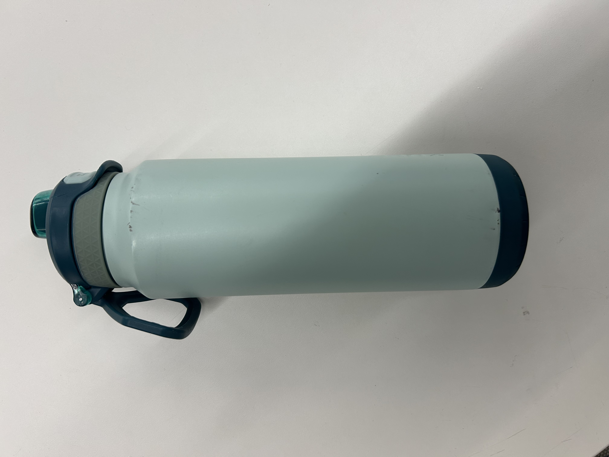</p>
</p>
All the measurements from the caliper are parameters in the file.
<p> <p>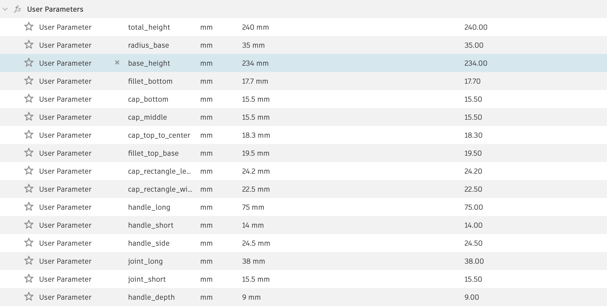</p>
</p>
I used so many offset (with the occasional tangent) construction planes. Lots of fillet and chamfer.
I had the hardest time making the cap for the bottle, particularly the curved part but that's where I got practice with the spline and sweep tool. I also messed around with the emboss tool to create it (after I watched that video about projecting onto curved surfaces) but that gave an undesired angle on the surface so I used the extrude tool instead.
This took me so long! But it was the first thing I had made so it got a lot faster by the end once I felt more comfortable knowing what tools to use.
<p> <p>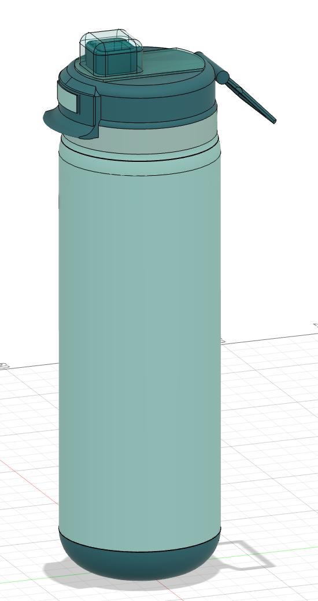</p>
</p>
<p> <p>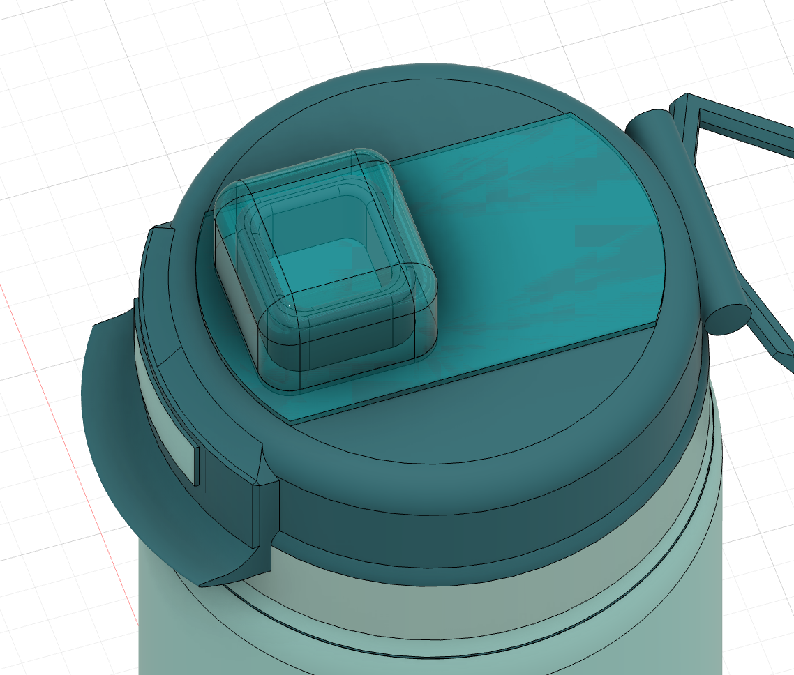</p>
</p>
<a href="Waterbottle.f3d" download="Noa_waterbottle.f3d">
The 3D file
</a>
</br></br>
I also modeled a 1.5mm screw.
<p> <p>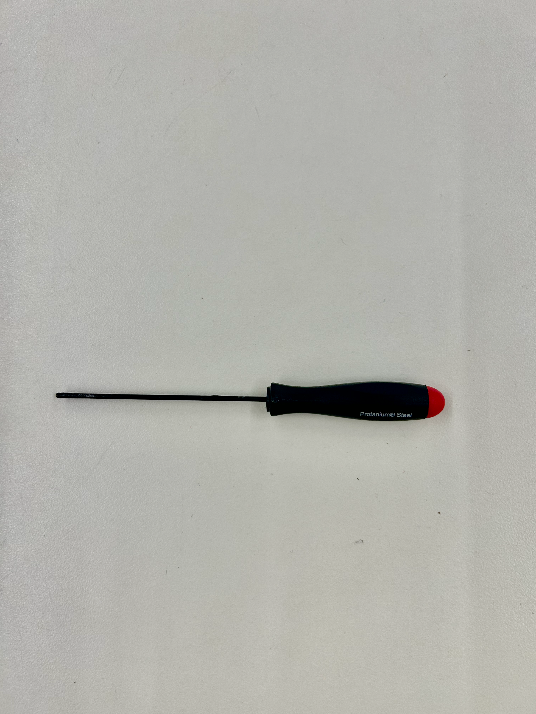</p>
<p>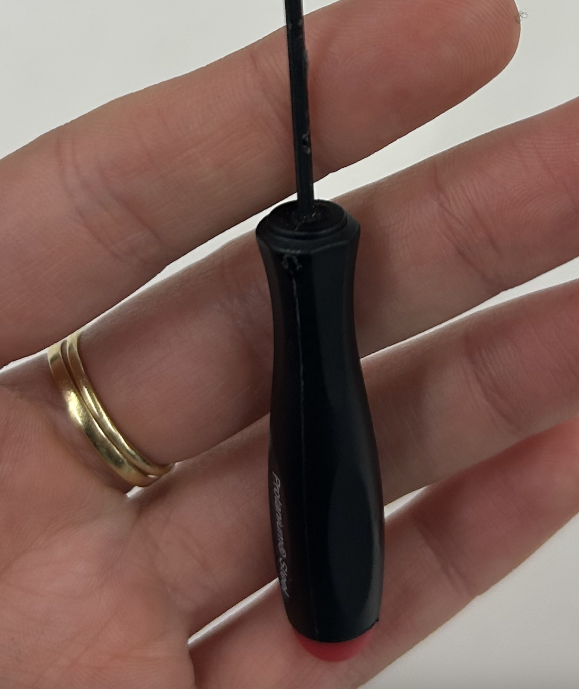</p>
</p>
<p>All the measurements from the caliper are parameters in the file. </p>
<p><p>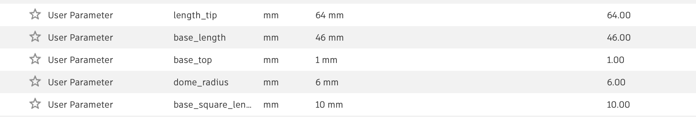</p>
</p>
I again made great use of the revolve tool and used the loft tool to connect the octagon shape at the top of the base to the rounded surface that was the rest of the base.</p>
<p> <p>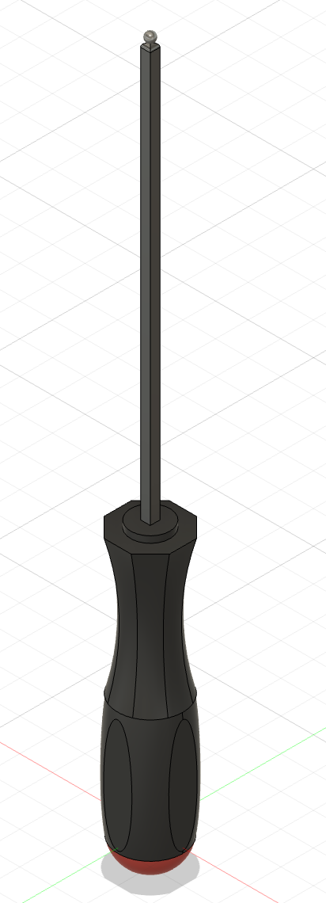</p>
</p>
<a href="screwdriver.f3d" download="Noa_screwdriver.f3d">
The 3D file
</a>
</div>